<meta charset="utf-8"><title>11/5のコラム note貼り付け</title>
<style>
/* one column of numbered paste steps; text steps vs image steps differ by marker */
:root{--bg:#F5F4F0;--card:#FFFFFF;--ink:#1D2321;--mute:#5F665F;--line:#DCDAD2;--btn:#1F5FBF;--btnok:#2E8B4F;--img:#E9F3EC;--imgink:#22663B;--sans:'IBM Plex Sans JP','Hiragino Sans','Noto Sans JP',sans-serif}
@media (prefers-color-scheme:dark){:root:not([data-theme="light"]){--bg:#171A19;--card:#202423;--ink:#ECEDE8;--mute:#A3AAA2;--line:#343937;--btn:#4D8BE6;--btnok:#3FA866;--img:#1E2C23;--imgink:#8FD3A6;color-scheme:dark}}
:root[data-theme="dark"]{--bg:#171A19;--card:#202423;--ink:#ECEDE8;--mute:#A3AAA2;--line:#343937;--btn:#4D8BE6;--btnok:#3FA866;--img:#1E2C23;--imgink:#8FD3A6;color-scheme:dark}
body{background:var(--bg);color:var(--ink);font-family:var(--sans);font-size:15px;line-height:1.75;padding:20px 16px 60px}
main{max-width:680px;margin:0 auto;display:grid;gap:28px}
header h1{font-size:22px;margin:0 0 6px;text-wrap:balance}
header p{margin:0;color:var(--mute);font-size:14px}
nav{display:flex;gap:8px;flex-wrap:wrap;margin-top:12px}
nav a{border:1px solid var(--line);border-radius:999px;padding:4px 14px;color:var(--ink);text-decoration:none;font-size:14px;background:var(--card)}
.part h2{font-size:18px;line-height:1.5;margin:0 0 12px;text-wrap:balance;display:flex;gap:10px;align-items:baseline;flex-wrap:wrap}
.tag{font-size:13px;background:var(--ink);color:var(--bg);border-radius:6px;padding:1px 9px}
.steps{list-style:none;margin:0;padding:0;display:grid;gap:12px}
.st{background:var(--card);border:1px solid var(--line);border-radius:12px;padding:12px;min-width:0}
.hd{display:flex;align-items:center;gap:8px;margin-bottom:8px}
.no{width:26px;height:26px;border-radius:50%;background:var(--btn);color:#fff;display:inline-flex;align-items:center;justify-content:center;font-size:13px;font-weight:700;flex:0 0 26px}
.im .no{background:var(--btnok)}
.hd em{font-style:normal;font-size:12px;background:var(--img);color:var(--imgink);border-radius:6px;padding:0 8px}
.bx{font-size:13.5px;line-height:1.7;border:1px solid var(--line);border-radius:8px;padding:8px 10px;max-height:110px;overflow:auto;overflow-wrap:anywhere}
.bx.tall{max-height:150px}.bx p{margin:0 0 6px}.bx h2{font-size:14px;margin:8px 0 4px}.bx a{color:var(--btn)}
.st img{display:block;width:100%;max-width:100%;border:1px solid var(--line);border-radius:8px}
.sub{font-size:12.5px;color:var(--mute);margin:6px 0 0}
.cp{width:100%;margin-top:8px;padding:12px;border:0;border-radius:10px;background:var(--btn);color:#fff;font:600 15px var(--sans);cursor:pointer}
.cp.ok{background:var(--btnok)}.cp.dl{background:var(--btnok)}.cp:focus-visible{outline:3px solid var(--ink);outline-offset:2px}
.xh{font-size:15px;margin:20px 0 10px}
.fb{font-size:13px;line-height:1.7;margin:8px 0 0;padding:8px 10px;border-radius:8px;background:var(--img);color:var(--imgink)}
.opts{display:grid;grid-template-columns:repeat(auto-fill,minmax(240px,1fr));gap:10px}
.opt{min-width:0}.opt img{display:block;width:100%;border:1px solid var(--line);border-radius:8px}
.ol{display:flex;align-items:center;gap:8px;margin-top:6px}.ol b{font-size:13px;flex:0 0 auto}.ol .on{font-size:12.5px;color:var(--mute);flex:1;min-width:0}.ol .cp{width:auto;flex:0 0 auto;padding:9px 14px}.ol .cp{margin:0;padding:9px}
.toast{font-size:13px;color:var(--mute);margin-top:6px}
</style>
<main><header><h1>11/5のコラム note貼り付け</h1><p>いま公開済みは6本です。青い番号は文章、緑は画像です。</p><nav><a href="#p1">1</a><a href="#p2">2</a><a href="#p3">3</a><a href="#p4">4</a><a href="#p5">5</a><a href="#p6">6</a></nav></header><section class="part" id="p1"><h2><span class="tag">OFF GRID</span>F1で1点の翌週、WEC王座がかかる　平川亮の8号車は17点差の首位</h2><p class="sub">サイトに公開：04:12</p><ol class="steps">
<li class="st im"><div class="hd"><span class="no">1</span><b>見出し画像</b><em>画像</em></div>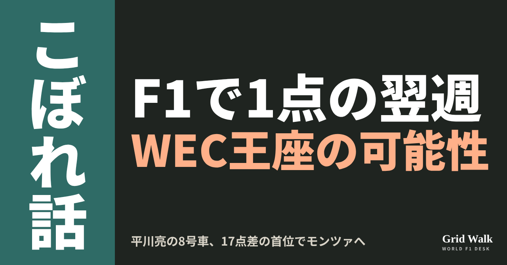<button class="cp dl" data-img="img/hirakawa-wec-title-monza-20261105.png" data-name="hirakawa-wec-title-monza-20261105_見出し画像.png">ダウンロード</button></li>
<li class="st"><div class="hd"><span class="no">2</span><b>タイトル</b></div><div class="bx" id="p1t">F1で1点の翌週、WEC王座がかかる　平川亮の8号車は17点差の首位</div><button class="cp" data-plain="p1t">タイトルをコピー</button></li>
<li class="st"><div class="hd"><span class="no">3</span><b>本文</b></div><div class="bx tall" id="p1r"><p>F1で初めて1点を取った翌週、平川亮は世界王者になるかもしれません。11月8日（日）のWEC（世界耐久選手権）最終戦モンツァ6時間を、平川が乗るトヨタの8号車は、ドライバーズ選手権の首位で迎えます。2位は同じトヨタの7号車で、差は17点。王座はこの2台のどちらかに決まります。</p><p>FIAの順位表とトヨタのレース後の発表など、元の記事へのリンクはサイトで → <a href="https://f1gridwalk.github.io/lens/hirakawa-wec-title-monza-20261105/?utm_source=note&amp;utm_campaign=hirakawa-wec-title-monza-20261105">https://f1gridwalk.github.io/lens/hirakawa-wec-title-monza-20261105/?utm_source=note&amp;utm_campaign=hirakawa-wec-title-monza-20261105</a></p><p>その1週間前の11月1日、平川はメキシコシティGPでハースからF1デビューし、正式結果は10位で1点でした（F1公式）。チェッカーは13位で受け、レース後にほかの車へ出たペナルティで繰り上がっています（詳しくは https://f1gridwalk.github.io/lens/hirakawa-first-point-20261102/ ）。ブラジルのGrande Prêmioは、平川がWECのシーズンで最も大事なレースのひとつに向けて、いつもの耐久の仕事に戻ると伝えています。モンツァの決勝は、F1のサンパウロGPと同じ日曜日です。サンパウロGPでハースに乗るのはラファエル・カマラです。</p><h2>3勝と1勝で、なぜ17点差なのか</h2><p>FIAの順位表では、8号車の平川、ブレンドン・ハートレー、セバスチャン・ブエミが114点。7号車の小林可夢偉、マイク・コンウェイ、ニック・デ・フリースが97点です。</p><p>今季の勝ち星は、8号車が開幕戦イモラ、9月の富士、10月のバルセロナで3勝（FIA WEC公式、Grande Prêmio、Autosport）。7号車は1勝ですが、その1勝がル・マン24時間でした。8号車はル・マンでは3位です。WECの得点は、6時間レースの優勝が25点なのに対し、ル・マンの優勝は50点。勝ち星の数の差ほど、点は開いていません。</p><p>10月18日のバルセロナでは、8号車が7号車を0.583秒差で抑えて1-2。トヨタはこれで1戦を残してマニュファクチャラーズの王座を決めました（トヨタ、Autosport）。平川はレース後にこう話しています。</p><blockquote><p>「運ではありません。自分たちでつかみ取ったんです」（平川、トヨタ・レーシングのレース後の発表／日本）</p></blockquote><blockquote><p>「マニュファクチャラーズのタイトルを決められたのはいいことですが、ドライバーズはまだ決まっていません。攻め続けて、8号車でそれも取れたらと思います」（同）</p></blockquote><h2>モンツァで王者になる条件</h2><p>6時間レースの点は、1位から25、18、15、12、10、8、6、4、2、1点。土曜のハイパーポールでポールを取った組にも1点が入ります（FIA WEC公式）。7号車が1レースで取れるのは、優勝とポールで最大26点です。</p><p>ここから数えると、7号車が3位以下なら、8号車は何位でも、リタイアしても王者です。7号車が2位なら8号車は8位以上、7号車が優勝なら8号車は5位以上で、ポールの1点がどちらに入っても上回ります。7号車が逆転するには、まず2位以内に入ることが条件です。</p><p>平川には、2022年と2023年に続く3度目の王座がかかります。どちらの年も、ハートレー、ブエミと組んで取ったものです（FIA WEC公式）。</p><p>相手の7号車の小林可夢偉は、トヨタのWECチームの代表も務めています。バルセロナのあと、こう話しました。</p><blockquote><p>「ドライバーズタイトルは7号車と8号車の争いになったので、最終戦は楽しめると思います」（小林可夢偉、トヨタ・レーシングのレース後の発表／日本）</p></blockquote><p>Grande Prêmioによると、モンツァは7号車のコンウェイにとって、引退前の最後のレースでもあります。</p><p><strong>F1のサンパウロGPと、同じ日曜日のモンツァ6時間。あなたはどちらを先に見ますか？</strong></p><p>━━━━━━━━━━</p><p><strong>F1 Grid Walk では、世界のF1ニュースを毎日日本語でまとめています。</strong></p><p>海外の記事の要約を、毎日載せています。</p><p><a href="https://f1gridwalk.github.io/">https://f1gridwalk.github.io/</a></p><p>ほかの海外記事も読みたい方は、F1 Grid Walkへ。</p><p><a href="https://f1gridwalk.github.io/lens/hirakawa-wec-title-monza-20261105/">https://f1gridwalk.github.io/lens/hirakawa-wec-title-monza-20261105/</a></p><p>━━━━━━━━━━</p><p><a href="https://grandepremio.com/en/endurance/wec/hartley-and-hirakawa-lead-toyota-title-battle-heading-into-2026-wec-finale-at-monza/">出典：Grande Prêmio（英語版）（ブラジル）</a></p><p><a href="https://fia.com/events/world-endurance-championship/season-2026/standings">出典：FIA（国際）</a></p><p><a href="https://www.fiawec.com/en/news/points-system/8261">出典：FIA WEC 公式（フランス）</a></p><p><a href="https://www.fiawec.com/en/driver/2026/8166">出典：FIA WEC 公式（フランス）</a></p><p><a href="https://media.toyota.ca/en/releases/2026/6-hours-of-barcelona--race---victory-seals-world-title-for-toyot.html">出典：トヨタ・レーシング（トヨタ・カナダのメディアサイト）（日本）</a></p><p><a href="https://www.autosport.com/wec/news/wec-barcelona-toyota-scores-dominant-1-2-to-clinch-manufacturers-title/10866109/">出典：Autosport（イギリス）</a></p><p><a href="https://www.fiawec.com/en/news/buemi-hartley-and-hirakawa-take-2022-wec-title/7517">出典：FIA WEC 公式（フランス）</a></p><p><a href="https://www.fiawec.com/en/news/la-toyota-ndeg8-soffre-la-finale-des-8-heures-de-bahrein-et-le-titre-mondial/7822">出典：FIA WEC 公式（フランス）</a></p><p><a href="https://www.formula1.com/en/results/2026/races/1298/mexico/race-result">出典：Formula1.com（イギリス）</a></p></div><button class="cp" data-rich="p1r">本文をコピー</button></li>
<li class="st"><div class="hd"><span class="no">4</span><b>ハッシュタグ</b></div><div class="bx" id="p1h">#F1 #F1jp #平川亮 #WEC #トヨタ #小林可夢偉 #ハース #メキシコシティGP #F1こぼれ話 #OFFGRID</div><button class="cp" data-plain="p1h">タグをコピー</button></li>
</ol><h3 class="xh">X</h3><ol class="steps">
<li class="st im"><div class="hd"><b>X用の画像</b><em>画像</em></div>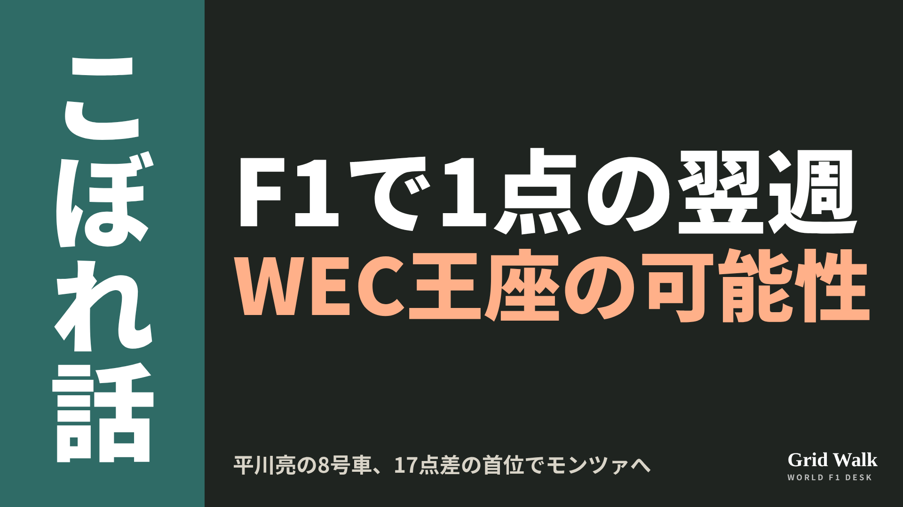<button class="cp dl" data-img="img/x_hirakawa-wec-title-monza-20261105.png" data-name="x_hirakawa-wec-title-monza-20261105.png">ダウンロード</button></li>
<li class="st"><div class="hd"><b>① noteをシェアするときの文</b></div><div class="bx" id="p1x0">F1で初めて1点を取った平川亮が、その翌週のWEC最終戦モンツァ6時間（11/8）を、トヨタ8号車でドライバーズ選手権の首位として迎えます。2位の7号車とは17点差。王者になる条件をnoteにまとめました #F1jp #平川亮 #WEC</div><button class="cp" data-plain="p1x0">コピー</button></li>
<li class="st"><div class="hd"><b>② ①への返信</b></div><div class="bx" id="p1x1">ほかの海外記事も読みたい方は、F1 Grid Walkへ。
https://f1gridwalk.github.io/lens/hirakawa-wec-title-monza-20261105/?utm_source=x&amp;utm_campaign=hirakawa-wec-title-monza-20261105</div><button class="cp" data-plain="p1x1">コピー</button></li>
<li class="st"><div class="hd"><b>③ ②への返信</b></div><div class="bx" id="p1x2">毎日の海外F1ニュースは、日本語でこちらにまとめています。
https://f1gridwalk.github.io/</div><button class="cp" data-plain="p1x2">コピー</button></li>
</ol></section><section class="part" id="p2"><h2><span class="tag">WORLD GRID</span>ボッタスは米国の上層部待ち、ベスティは売り込み　キャデラック最後の席</h2><p class="sub">サイトに公開：04:12</p><ol class="steps">
<li class="st im"><div class="hd"><span class="no">1</span><b>見出し画像</b><em>画像</em></div>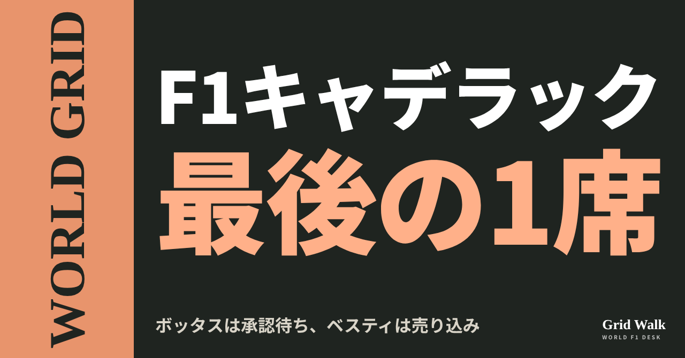<button class="cp dl" data-img="img/cadillac-seat-race-20261105.png" data-name="cadillac-seat-race-20261105_見出し画像.png">ダウンロード</button></li>
<li class="st"><div class="hd"><span class="no">2</span><b>タイトル</b></div><div class="bx" id="p2t">ボッタスは米国の上層部待ち、ベスティは売り込み　キャデラック最後の席</div><button class="cp" data-plain="p2t">タイトルをコピー</button></li>
<li class="st"><div class="hd"><span class="no">3</span><b>本文</b></div><div class="bx tall" id="p2r"><p>メキシコシティGPのあと、キャデラックの2027年の残り1席をめぐって、席にいる人と狙う人の言葉が出ました。ボッタスは、決めるのは「アメリカの上層部」だと待つ構え。メルセデスのリザーブ、フレデリック・ベスティは「とても、とても良い走りができると信じています」と売り込みました。何を見出しにしたかは、国によって違います。</p><p>フィンランドやデンマークなど各国の見出しの違いと、元の記事へのリンクはサイトで → <a href="https://f1gridwalk.github.io/lens/cadillac-seat-race-20261105/?utm_source=note&amp;utm_campaign=cadillac-seat-race-20261105">https://f1gridwalk.github.io/lens/cadillac-seat-race-20261105/?utm_source=note&amp;utm_campaign=cadillac-seat-race-20261105</a></p><h2>ボッタス、決めるのは「アメリカの上層部」</h2><p>ペレスはすでに、少なくとも2029年までの延長を済ませています。ボッタスはメキシコで、自分の契約についてこう話しました（要約はサイトに https://f1gridwalk.github.io/news/en-planetf1-bottas-cadillac-decision/ ）。</p><blockquote><p>「僕にとっては、来年ここに誰がいるかは、ずっとはっきりしていました」「チェコは延長しましたが、僕はまだ次の延長をしていません」「大きな会社には、最終的な決定を承認する取締役会が必ずあって、それはもうすぐだと思います」「だから、あとは全部、アメリカの上層部に認めてもらうだけだと思います」（ボッタス、PlanetF1／イギリス）</p></blockquote><p>フィンランドのSporttiは11月3日、見出しを「ボッタスが明かした　F1での将来が決まるのはここ」とし、決まる「場所」に目を向けました。イギリスのPlanetF1の見出しは「2027年のうわさが過熱」。ただ、同じページの題名（ブラウザのタブに出るもの）は「コルトン・ハータのうわさが過熱」で、ハータの名前が前に出ています。</p><p>フランスのNextgen-Autoが載せたGMMの配信は「ボッタス、契約は承認されると自信」という見出しで、ブコウスキー代表の言葉も並べました。</p><blockquote><p>「2つ目の席については、特に急いではいません」（ブコウスキー代表、Nextgen-Auto／フランス）</p></blockquote><p>ボッタスに満足かと聞かれた代表は「全体としては、はい」。同じ記事の中に、ボッタスの「もうすぐ」と代表の「急いではいません」が並んでいます。</p><p>オランダのGPblogは11月2日、メキシコでのサスペンションの故障と並べて、この言葉を見出しにしました。</p><blockquote><p>「舞台裏の問題がとても多くて、そのいちばんひどいところを受けてきたのは僕だと思います」（ボッタス、GPblog／オランダ）</p></blockquote><p>同じ記事で、ブコウスキー代表は「アメリカ人のドライバーがいたら素晴らしい。盛り上がりが増す」とも話しています。</p><h2>ベスティ「タイミングはこれ以上ない」</h2><p>ベスティは10月30日（金）のFP1で、ラッセルの代わりにメルセデスに乗って3番手。この週末に王者を決めたアントネッリとの差は0.111秒でした。イギリスのThe Raceは11月4日、ベスティの言葉を伝える記事の見出しを「2027年のキャデラックの席への、力強い売り込み」としました（要約はサイトに https://f1gridwalk.github.io/news/en-therace-vesti-cadillac-pitch/ ）。ベスティはこの2年、アメリカのIMSAでキャデラックの車を走らせてもいます。ラッセルも後押ししました。</p><blockquote><p>「タイミングはこれ以上ないほどです」「席についての話し合いはあって、僕はその席に狙いを定めています」「あの車なら、自分はとても、とても良い走りができると信じています」「僕が気にかけているのはF1だけ。いたい場所はF1だけです」（ベスティ、The Race／イギリス）</p></blockquote><blockquote><p>「彼がキャデラックの席を狙える位置にいようと必死に戦っているのは知っているし、チャンスに値すると思います」「彼が何をできるかを見せる機会を、必ず持たせたい。それが僕たちにできる最低限のことです」（ラッセル、The Race／イギリス）</p></blockquote><p>デンマーク語のF1ニュースレター「Formel 1 bag kulisserne」は11月3日、メキシコシティのパドック日記を「ベスティのキャデラックのチャンス」と題し、ベスティがF1で「これまでで最高の走り」をしたと書き出しました。</p><h2>角田は候補の一人のまま</h2><p>The Raceはベスティを、ボッタス、ハータ、角田裕毅らと並ぶ、ペレスの2027年の相棒の候補と書いています。ボッタスの話を伝えたPlanetF1、フィンランド、フランス、オランダの記事は、角田には触れていません。</p><p>ハータも候補の一人で、キャデラックによると今週末のサンパウロGPのFP1で、ペレスの代わりに走ります。</p><p>編集部としては、席にいる人が待ち、外にいる人が売り込んだ1週間だったと見ています。ボッタスの言う「もうすぐ」がいつなのかは、まだ分かりません。</p><p><strong>キャデラックの最後の1席、あなたなら誰を選びますか？</strong></p><p>━━━━━━━━━━</p><p><strong>F1 Grid Walk では、世界のF1ニュースを毎日日本語でまとめています。</strong></p><p>海外の記事の要約を、毎日載せています。</p><p><a href="https://f1gridwalk.github.io/">https://f1gridwalk.github.io/</a></p><p>ほかの海外記事も読みたい方は、F1 Grid Walkへ。</p><p><a href="https://f1gridwalk.github.io/lens/cadillac-seat-race-20261105/">https://f1gridwalk.github.io/lens/cadillac-seat-race-20261105/</a></p><p>━━━━━━━━━━</p><p><a href="https://www.planetf1.com/news/valtteri-bottas-cadillac-rumours-f1-future">出典：PlanetF1（イギリス）</a></p><p><a href="https://www.the-race.com/formula-1/mercedes-f1-driver-fred-vesti-punchy-pitch-2027-cadillac-seat/">出典：The Race（イギリス）</a></p><p><a href="https://www.sportti.com/moottoriurheilu/valtteri-bottas-teki-paljastuksen-taalla-hanen-f1-tulevaisuutensa-ratkeaa/">出典：Sportti.com（フィンランド）</a></p><p><a href="https://motorsport.nextgen-auto.com/en/formula-1/bottas-confident-cadillac-contract-will-be-approved,212987.html">出典：Nextgen-Auto（GMM）（フランス）</a></p><p><a href="https://sports.yahoo.com/articles/bottas-claims-had-worst-cadillacs-170100676.html">出典：GPblog（Yahoo Sports）（オランダ）</a></p><p><a href="https://peternygaardf1.substack.com/p/vestis-cadillac-chancer">出典：Formel 1 bag kulisserne（Peter Nygaard）（デンマーク）</a></p><p><a href="https://www.cadillacf1team.com/news/a-long-way-south-for-the-cadillac-formula-1-r-team">出典：キャデラックF1チーム公式（アメリカ）</a></p></div><button class="cp" data-rich="p2r">本文をコピー</button></li>
<li class="st"><div class="hd"><span class="no">4</span><b>ハッシュタグ</b></div><div class="bx" id="p2h">#F1 #F1jp #キャデラック #ボッタス #ベスティ #角田裕毅 #コルトンハータ #メルセデス #WORLDGRID #海外F1</div><button class="cp" data-plain="p2h">タグをコピー</button></li>
</ol><h3 class="xh">X</h3><ol class="steps">
<li class="st im"><div class="hd"><b>X用の画像</b><em>画像</em></div>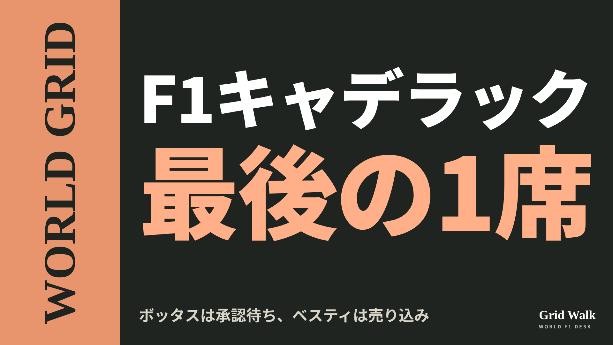<button class="cp dl" data-img="img/x_cadillac-seat-race-20261105.png" data-name="x_cadillac-seat-race-20261105.png">ダウンロード</button></li>
<li class="st"><div class="hd"><b>① noteをシェアするときの文</b></div><div class="bx" id="p2x0">キャデラックの2027年の残り1席。ボッタスは「あとはアメリカの上層部に認めてもらうだけ」、ベスティはメキシコのFP1で3番手に入って名乗り。各国の伝え方をnoteにまとめました #F1jp #キャデラック</div><button class="cp" data-plain="p2x0">コピー</button></li>
<li class="st"><div class="hd"><b>② ①への返信</b></div><div class="bx" id="p2x1">ほかの海外記事も読みたい方は、F1 Grid Walkへ。
https://f1gridwalk.github.io/lens/cadillac-seat-race-20261105/?utm_source=x&amp;utm_campaign=cadillac-seat-race-20261105</div><button class="cp" data-plain="p2x1">コピー</button></li>
<li class="st"><div class="hd"><b>③ ②への返信</b></div><div class="bx" id="p2x2">毎日の海外F1ニュースは、日本語でこちらにまとめています。
https://f1gridwalk.github.io/</div><button class="cp" data-plain="p2x2">コピー</button></li>
</ol></section><section class="part" id="p3"><h2><span class="tag">OFF GRID</span>ハータ、スーパーライセンスまであと1点　順位表の誤りで計算違い</h2><p class="sub">サイトに公開：04:12</p><ol class="steps">
<li class="st im"><div class="hd"><span class="no">1</span><b>見出し画像</b><em>画像</em></div>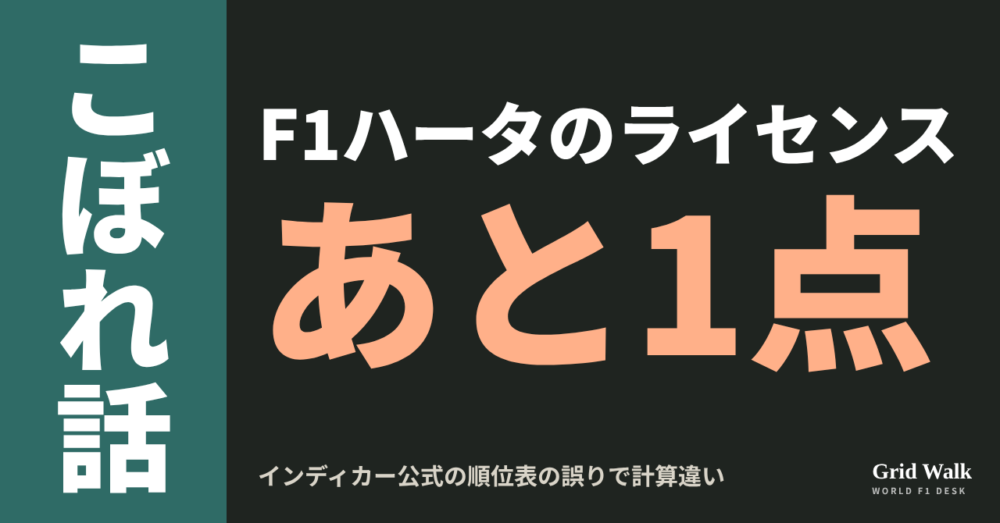<button class="cp dl" data-img="img/herta-superlicence-one-point-20261105.png" data-name="herta-superlicence-one-point-20261105_見出し画像.png">ダウンロード</button></li>
<li class="st"><div class="hd"><span class="no">2</span><b>タイトル</b></div><div class="bx" id="p3t">ハータ、スーパーライセンスまであと1点　順位表の誤りで計算違い</div><button class="cp" data-plain="p3t">タイトルをコピー</button></li>
<li class="st"><div class="hd"><span class="no">3</span><b>本文</b></div><div class="bx tall" id="p3r"><p>コルトン・ハータがF1の決勝に出るためのスーパーライセンスに、足りないのはあと1点。しかもチームの計算は、インディカー公式サイトの順位表の誤りで2点ずれていました。キャデラックは今週末のサンパウロGPで、金曜（現地6日）のFP1にセルジオ・ペレスに代えてハータを走らせると、イギリスのThe Raceが11月3日に報じました。ハータにとって今季6回目のFP1です（要約はサイトに https://f1gridwalk.github.io/news/en-therace-herta-cadillac-fp1-superlicence/ ）。</p><p>The Raceの2本の記事と、インディカー公式の順位表へのリンクはサイトで → <a href="https://f1gridwalk.github.io/lens/herta-superlicence-one-point-20261105/?utm_source=note&amp;utm_campaign=herta-superlicence-one-point-20261105">https://f1gridwalk.github.io/lens/herta-superlicence-one-point-20261105/?utm_source=note&amp;utm_campaign=herta-superlicence-one-point-20261105</a></p><h2>6位ではなく7位だった</h2><p>The Raceによると、キャデラックは今年7月、ハータの点の計算をFIAに確かめていました。もとにしたのは、インディカー公式サイトに載っていた2025年の順位表。そこでは、ハータは6位になっていました。</p><p>2025年のハータは372点で、フェリックス・ローゼンクヴィストと同点でした。The Raceは、2位に入った回数が多いローゼンクヴィストが上になる、と書いています。インディカー公式の順位表でも、今はローゼンクヴィストが6位、ハータが7位です。</p><p>The Raceの10月30日の記事によると、誤りはその週に記者が知らせるまでサイトに残っていて、そのあとハータは7位に直されました。直った順位表は、2025年8月31日に発表された正式な順位と同じだといいます。</p><p>The Raceによると、7位で得られるのは4点で、6位なら6点でした。誤った順位で2点多く数えていたため、チームはメキシコのFP1で40点に届くと見ていましたが、届きませんでした。</p><h2>スーパーライセンスと「39点」</h2><p>F1の決勝を走るには、FIAが出すスーパーライセンスが要ります。下のカテゴリーでの順位などに応じた点を、申請する年の前の3年間ぶん足して、40点以上が必要です（PlanetF1）。仕組みはDEEP GRIDでくわしく書きました（https://f1gridwalk.github.io/deep/super-licence-points/ ）。</p><p>The Raceの計算では、ハータはインディカーで2023年の10位が1点、2024年の2位が30点、2025年の7位が4点で、合わせて35点。ここにFP1の4点を足して39点です。</p><p>FP1の点は、フリー走行専用のスーパーライセンスを持つドライバーが、F1世界選手権の大会のフリー走行で100km以上を走り、ペナルティポイントを受けなければ、1つの大会につき1点。数えられるのは10点までで、走った年に関係なく足せます（The Raceが伝えた国際競技規則の文言）。ハータはここまで5回FP1を走りましたが、モンツァでは距離が足りず、1点になりませんでした。</p><p>チームがルーキーの金曜走行の決まりのために必要だったのは4回で、それはもう満たしています（決まりの話は https://f1gridwalk.github.io/deep/rookie-fp1/ ）。The Raceは、今回の6回目をスーパーライセンスのための走行と伝えています。</p><h2>インテルラゴスで24周</h2><p>残りの1点の条件は、FP1で100km以上を走ること。The Raceは、ブラジルのFP1では少なくとも24周が必要だと書いています。F1公式によると1周は4.309km。23周では99kmあまりで、わずかに届きません。</p><p>The Raceは、ブラジルでも点を取れる保証はないと書き、その理由として、この24周を走りきる必要があることを挙げています。</p><p>The Raceは、ハータを2027年のキャデラックの席の有力候補の1人と書いています。ハータは2022年にも、点が足りずにF1行きの話が実現しなかったことがあります（経緯は上のDEEP GRIDの記事に）。</p><p>編集部としては、モンツァで距離が足りなかったことに加えて、同点の2人をどう並べるかという決まりが最後の1点に関わったところに、成績を点に置き換えて入口を決めるスーパーライセンスらしさが出ていると見ています。</p><p><strong>金曜のFP1、ハータは24周を走りきれると思いますか？</strong></p><p>━━━━━━━━━━</p><p><strong>F1 Grid Walk では、世界のF1ニュースを毎日日本語でまとめています。</strong></p><p>海外の記事の要約を、毎日載せています。</p><p><a href="https://f1gridwalk.github.io/">https://f1gridwalk.github.io/</a></p><p>ほかの海外記事も読みたい方は、F1 Grid Walkへ。</p><p><a href="https://f1gridwalk.github.io/lens/herta-superlicence-one-point-20261105/">https://f1gridwalk.github.io/lens/herta-superlicence-one-point-20261105/</a></p><p>━━━━━━━━━━</p><p><a href="https://www.the-race.com/formula-1/colton-herta-gets-another-cadillac-f1-practice-to-earn-superlicence/">出典：The Race（イギリス）</a></p><p><a href="https://www.the-race.com/formula-1/why-colton-herta-still-one-point-off-f1-superlicence/">出典：The Race（イギリス）</a></p><p><a href="https://www.indycar.com/standings/2025">出典：IndyCar公式サイト（アメリカ）</a></p><p><a href="https://www.planetf1.com/features/fia-super-licence-explained">出典：PlanetF1（イギリス）</a></p><p><a href="https://www.formula1.com/en/racing/2026/brazil">出典：F1公式サイト（イギリス）</a></p></div><button class="cp" data-rich="p3r">本文をコピー</button></li>
<li class="st"><div class="hd"><span class="no">4</span><b>ハッシュタグ</b></div><div class="bx" id="p3h">#F1 #F1jp #コルトンハータ #キャデラック #スーパーライセンス #インディカー #サンパウロGP #F1こぼれ話 #OFFGRID</div><button class="cp" data-plain="p3h">タグをコピー</button></li>
</ol><h3 class="xh">X</h3><ol class="steps">
<li class="st im"><div class="hd"><b>X用の画像</b><em>画像</em></div>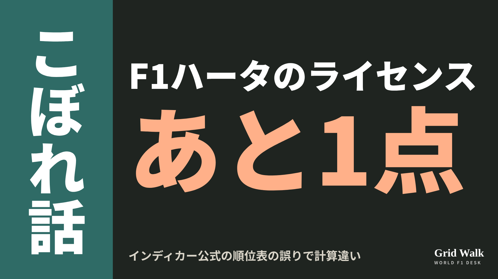<button class="cp dl" data-img="img/x_herta-superlicence-one-point-20261105.png" data-name="x_herta-superlicence-one-point-20261105.png">ダウンロード</button></li>
<li class="st"><div class="hd"><b>① noteをシェアするときの文</b></div><div class="bx" id="p3x0">コルトン・ハータのスーパーライセンスは、40点に対して39点。チームの計算が2点ずれたのは、インディカー公式の順位表の誤りからでした。ブラジルのFP1で100kmを走れば届きます。noteにまとめました #F1jp #ハータ</div><button class="cp" data-plain="p3x0">コピー</button></li>
<li class="st"><div class="hd"><b>② ①への返信</b></div><div class="bx" id="p3x1">ほかの海外記事も読みたい方は、F1 Grid Walkへ。
https://f1gridwalk.github.io/lens/herta-superlicence-one-point-20261105/?utm_source=x&amp;utm_campaign=herta-superlicence-one-point-20261105</div><button class="cp" data-plain="p3x1">コピー</button></li>
<li class="st"><div class="hd"><b>③ ②への返信</b></div><div class="bx" id="p3x2">毎日の海外F1ニュースは、日本語でこちらにまとめています。
https://f1gridwalk.github.io/</div><button class="cp" data-plain="p3x2">コピー</button></li>
</ol></section><section class="part" id="p4"><h2><span class="tag">WORLD GRID</span>カマラ、地元でF1デビュー　ブラジルの見出しにはラスベガスも</h2><p class="sub">サイトに公開：04:12</p><ol class="steps">
<li class="st im"><div class="hd"><span class="no">1</span><b>見出し画像</b><em>画像</em></div>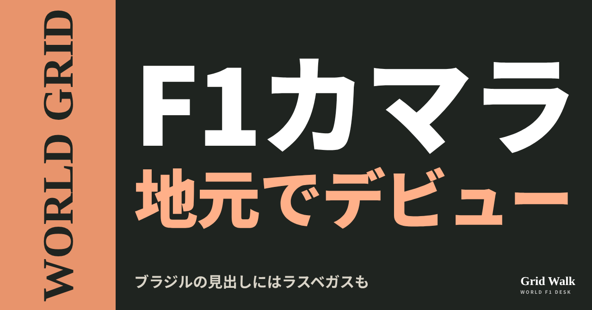<button class="cp dl" data-img="img/camara-home-debut-20261105.png" data-name="camara-home-debut-20261105_見出し画像.png">ダウンロード</button></li>
<li class="st"><div class="hd"><span class="no">2</span><b>タイトル</b></div><div class="bx" id="p4t">カマラ、地元でF1デビュー　ブラジルの見出しにはラスベガスも</div><button class="cp" data-plain="p4t">タイトルをコピー</button></li>
<li class="st"><div class="hd"><span class="no">3</span><b>本文</b></div><div class="bx tall" id="p4r"><p>ハースは11月3日（ブラジル時間）、エステバン・オコンを今季のレースにもう出さないと発表しました。サンパウロGP（11月6〜8日）では、ラファエル・カマラがオリバー・ベアマンと組みます。フェラーリ育成の21歳で、F2の首位を走るブラジル人です。Grande Prêmioによると、34人目のブラジル人F1ドライバーになります。国によって、見出しにしたところが違いました。</p><p>ブラジル各紙の見出しの違いと、元の記事へのリンクはサイトで → <a href="https://f1gridwalk.github.io/lens/camara-home-debut-20261105/?utm_source=note&amp;utm_campaign=camara-home-debut-20261105">https://f1gridwalk.github.io/lens/camara-home-debut-20261105/?utm_source=note&amp;utm_campaign=camara-home-debut-20261105</a></p><h2>ブラジル：地元の誇りと「ラスベガス」</h2><p>先に動いたのはブラジルのメディアでした。Grande Prêmioは公式発表の前の3日午後、「ハース、カマラをサンパウロとラスベガスのGPでF1デビューさせると決める」と見出しを立てました。最初に伝えたのはグローボのge.comだ、と書いています。</p><p>ところが、ハースの発表文に出てくるのはサンパウロGPだけです。Grande Prêmioも発表を受けた記事（要約：https://f1gridwalk.github.io/news/pt-grandepremio-haas-ocon-camara-interlagos/ ）では、11月21日のラスベガスも走るというのはグローボの報道で、ハースは確認していないとしています。Estadãoの配信記事は、残りのF1のレースに出るかははっきりしない、とさらに慎重でした。</p><p>カマラの出身地を前に出した新聞もあります。ペルナンブコ州のFolha de Pernambucoは、見出しを「ペルナンブコ出身のラファエル・カマラ」で始めました。</p><p>「地元でデビュー」の数え方は分かれました。Metrópolesは「カマラ、地元でデビューしたブラジル人のリストでセナに並ぶ」と伝え、前に5人を挙げています。記者とAFPの連名で載ったDiario de Pernambucoの見出しは「7人目」で、挙げた6人の顔ぶれも少し違います。セナの名前は、どちらにも入っています。</p><p>本人の言葉を見出しにしたのはEstadãoです。</p><blockquote><p>「F1デビューをブラジルでできるのは、僕にとって特別な瞬間です」「学ぶことがたくさんあるのは分かっています」（ラファエル・カマラ、Estadão Conteúdo／ブラジル）</p></blockquote><h2>フランスはオコン、オランダは声明と「タイヤ」</h2><p>フランスのNextgen-Autoの見出しは「公式：ハース、オコンを完全に外し、ブラジルからカマラをF1に」。オコンがこの打ち切りについて話すかはまだ分からない、とも書いています。</p><p>オランダのF1Maximaalは、ハースの声明を軸に伝えました。その声明で、小松礼雄代表はこう述べています。</p><blockquote><p>「エステバン・オコンには、今季はTGRハースF1チームのレースシートに戻らないと伝えました」「チームとエステバンの間で最終的に交わされた話し合いは、内部のことのままです」（小松礼雄代表、ハースの声明。The Race／イギリス）</p></blockquote><p>メキシコGPの金曜のFP2で、レースシミュレーションをソフトではなくミディアムで走るよう言われてオコンが怒った件は、11月1日のコラム（https://f1gridwalk.github.io/lens/ocon-haas-exit-20261101/ ）で取り上げました。F1Maximaalはその理由も書いています。ソフトに満足していなかったのはベアマンで、ハースは別のコンパウンドのデータを集めたかった、という説明です。</p><p>F1Maximaalは、ドイツのタブロイド紙ビルトの報道として、金曜の夜にあったのは激しい口論だけで、オコンは土曜の朝に謝ろうとしたが、小松代表が話すのを断った、と伝えています。11月3日のコラム（https://f1gridwalk.github.io/lens/komatsu-ocon-decision-20261103/ ）で取り上げた、GrandPrix.comが伝えたビルトの報道（オコンが小松代表の肩をつかんだ）とは食い違います。オコンは身体的な暴力を否定しており、何があったのかについてハースはコメントしていません（The Race）。</p><h2>「34人目」の数え方</h2><p>Grande Prêmioは10月、カマラの来季の契約が決まった時点で「34人目」と数えていました。練習走行だけのルイス・ラジアとフェリペ・ドルゴビッチは入れない数え方です。同じ記事は、2020年の終わりにピエトロ・フィッティパルディが、けがをしたロマン・グロージャンの代わりに2戦だけ走ったことにも触れています。そのチームも、今回と同じハースでした。今週末は、アウディのガブリエル・ボルトレートと2人のブラジル人が並びます。</p><p>メキシコでオコンの代わりを務めた平川亮は、同じ週末にWECの最終戦モンツァに出ます（Grande Prêmio）。</p><p>編集部としては、ブラジルは地元の誇りと「次はどこを走るか」に、フランスはオコンの去り方に目を向けた、と見ています。ラスベガスはまだ報道の段階で、ハースが発表したのはサンパウロGPだけです。</p><p><strong>21歳のF1デビューが、地元インテルラゴス。あなたはどこに注目しますか？</strong></p><p>━━━━━━━━━━</p><p><strong>F1 Grid Walk では、世界のF1ニュースを毎日日本語でまとめています。</strong></p><p>海外の記事の要約を、毎日載せています。</p><p><a href="https://f1gridwalk.github.io/">https://f1gridwalk.github.io/</a></p><p>ほかの海外記事も読みたい方は、F1 Grid Walkへ。</p><p><a href="https://f1gridwalk.github.io/lens/camara-home-debut-20261105/">https://f1gridwalk.github.io/lens/camara-home-debut-20261105/</a></p><p>━━━━━━━━━━</p><p><a href="https://grandepremio.com/br/f1/haas-oficializa-saida-antecipada-de-ocon-e-promove-estreia-de-camara-em-interlagos/">出典：Grande Prêmio（ブラジル）</a></p><p><a href="https://grandepremio.com/br/f1/haas-decide-escalar-camara-para-estreia-na-f1-nos-gps-de-sao-paulo-e-las-vegas/">出典：Grande Prêmio（ブラジル）</a></p><p><a href="https://grandepremio.com/br/f1/camara-se-torna-34o-brasileiro-da-historia-a-correr-na-f1-apos-acerto-com-haas-para-2027/">出典：Grande Prêmio（ブラジル）</a></p><p><a href="https://www.oliberal.com/esportes/rafa-camara-enaltece-estreia-na-f1-pela-haas-e-agradece-ferrari-ha-muito-a-aprender-1.1190328">出典：Estadão Conteúdo（O Liberal掲載）（ブラジル）</a></p><p><a href="https://www.folhape.com.br/noticia/amp/522175/pernambucano-rafael-camara-sera-titular-da-haas-nos-gps-de-sao-paulo-e/">出典：Folha de Pernambuco（ブラジル）</a></p><p><a href="https://www.metropoles.com/esportes/f1-camara-se-juntara-a-senna-em-lista-de-brasileiros-estreantes-em-casa">出典：Metrópoles（ブラジル）</a></p><p><a href="https://www.diariodepernambuco.com.br/esportes-dp/automobilismo/2026/11/11728283-rafael-camara-sera-o-setimo-brasileiro-a-estrear-na-formula-1-em-um-grande-premio-no-pais.html">出典：Diario de Pernambuco（ブラジル）</a></p><p><a href="https://motorsport.nextgen-auto.com/fr/formule-1/officiel-haas-ecarte-definitivement-ocon-et-lance-camara-en-f1-des-le-bresil,213035.html">出典：Nextgen-Auto（フランス）</a></p><p><a href="https://www.f1maximaal.nl/formule-1/haas-deelt-persbericht-over-ocon-nieuwe-debutant-in-brazilie">出典：F1Maximaal（オランダ）</a></p><p><a href="https://www.the-race.com/formula-1/haas-drops-ocon-for-rest-of-2026-f1-season/">出典：The Race（イギリス）</a></p><p><a href="https://www.haasf1team.com/news/team-statement-driver-update-0">出典：TGR Haas F1 Team 公式（アメリカ）</a></p></div><button class="cp" data-rich="p4r">本文をコピー</button></li>
<li class="st"><div class="hd"><span class="no">4</span><b>ハッシュタグ</b></div><div class="bx" id="p4h">#F1 #F1jp #カマラ #ハース #サンパウロGP #インテルラゴス #オコン #WORLDGRID #F1ニュース</div><button class="cp" data-plain="p4h">タグをコピー</button></li>
</ol><h3 class="xh">X</h3><ol class="steps">
<li class="st im"><div class="hd"><b>X用の画像</b><em>画像</em></div>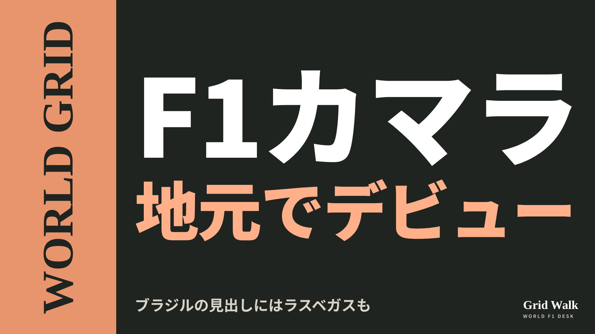<button class="cp dl" data-img="img/x_camara-home-debut-20261105.png" data-name="x_camara-home-debut-20261105.png">ダウンロード</button></li>
<li class="st"><div class="hd"><b>① noteをシェアするときの文</b></div><div class="bx" id="p4x0">ハースのラファエル・カマラが、地元インテルラゴスでF1デビュー。ブラジルでは34人目のF1ドライバーです。ブラジルの見出しにはラスベガスの名前も。各国の伝え方をnoteにまとめました #F1jp #サンパウロGP</div><button class="cp" data-plain="p4x0">コピー</button></li>
<li class="st"><div class="hd"><b>② ①への返信</b></div><div class="bx" id="p4x1">ほかの海外記事も読みたい方は、F1 Grid Walkへ。
https://f1gridwalk.github.io/lens/camara-home-debut-20261105/?utm_source=x&amp;utm_campaign=camara-home-debut-20261105</div><button class="cp" data-plain="p4x1">コピー</button></li>
<li class="st"><div class="hd"><b>③ ②への返信</b></div><div class="bx" id="p4x2">毎日の海外F1ニュースは、日本語でこちらにまとめています。
https://f1gridwalk.github.io/</div><button class="cp" data-plain="p4x2">コピー</button></li>
</ol></section><section class="part" id="p5"><h2><span class="tag">OFF GRID</span>ハミルトン「レッドブルのエンジンをどうやって抜けば」　未放送の無線</h2><p class="sub">サイトに公開：04:12</p><ol class="steps">
<li class="st im"><div class="hd"><span class="no">1</span><b>見出し画像</b><em>画像</em></div>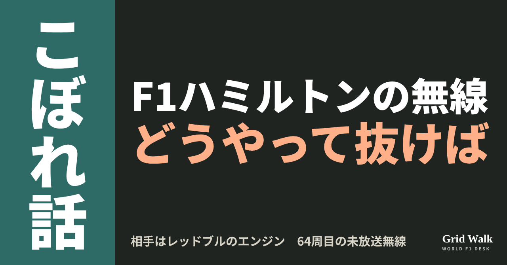<button class="cp dl" data-img="img/hamilton-redbull-engine-radio-20261105.png" data-name="hamilton-redbull-engine-radio-20261105_見出し画像.png">ダウンロード</button></li>
<li class="st"><div class="hd"><span class="no">2</span><b>タイトル</b></div><div class="bx" id="p5t">ハミルトン「レッドブルのエンジンをどうやって抜けば」　未放送の無線</div><button class="cp" data-plain="p5t">タイトルをコピー</button></li>
<li class="st"><div class="hd"><span class="no">3</span><b>本文</b></div><div class="bx tall" id="p5r"><p>「レッドブルのエンジンをどうやって抜けばいいんだ？」。11月1日（現地時間）のメキシコシティGPの終盤、ポールからスタートしたルイス・ハミルトン（フェラーリ）は、無線でこうこぼしていました。この未放送の無線を、イギリスのPlanetF1が伝えています。レースのあとには、勝ったマックス・フェルスタッペン（レッドブル）とそろって、ストレートでパワーを失う「クリッピング」を問題にしていました。</p><p>無線と記者会見の元の記事、ストレートモードの解説、控え室のやりとりを書いたSTORYへのリンクはサイトで → <a href="https://f1gridwalk.github.io/lens/hamilton-redbull-engine-radio-20261105/?utm_source=note&amp;utm_campaign=hamilton-redbull-engine-radio-20261105">https://f1gridwalk.github.io/lens/hamilton-redbull-engine-radio-20261105/?utm_source=note&amp;utm_campaign=hamilton-redbull-engine-radio-20261105</a></p><h2>64周目、「使える」と言われても</h2><p>F1公式によると、レースはバルテリ・ボッタス（キャデラック）のクラッシュでセーフティカーが出たあと、バリアの損傷のため46周目から赤旗となりました。再開後にもう一度セーフティカーが出て、最後の再開は残り8周でした。結果はフェルスタッペンが優勝、ハミルトンは0.799秒差の2位です。</p><p>PlanetF1によると、71周のうちの64周目、レースエンジニアのカルロ・サンティが伝えました。</p><blockquote><p>「メインストレートで、オーバーテイクとブーストが使える」（サンティ、チーム無線／PlanetF1〈イギリス〉）</p></blockquote><p>返ってきたのが、冒頭の一言です。</p><blockquote><p>「レッドブルのエンジンをどうやって抜けばいいんだ？」（ハミルトン、チーム無線／PlanetF1〈イギリス〉）</p></blockquote><h2>フェルスタッペンも「そのとおり」</h2><p>表彰式の前の控え室（クールダウンルーム）では、ハミルトンが冗談まじりにストレートのパワーの差をこぼし、フェルスタッペンはフェラーリのコーナリングを挙げて返していました（PlanetF1）。このやりとりはSTORY「外側から、王者は抜けない」（https://f1gridwalk.github.io/topics/verstappen-around-the-outside/ ）にあります。</p><p>記事は、2人がそろって「クリッピング」を問題にしたとも書いています。車がエネルギーを回収して、ストレートでパワーを失う現象です。どの場面での言葉かは、記事に書かれていません。</p><blockquote><p>「あのクリッピングは、本当にばかげてる」（ハミルトン、PlanetF1〈イギリス〉）</p></blockquote><blockquote><p>「うん、そのとおり。1コーナーへの追い抜きを、本当に台なしにしている」（フェルスタッペン、同）</p></blockquote><h2>記者会見では、FIAに対応を求める</h2><p>レース後の記者会見では、ハミルトンはFIAに対応を求めました（PlanetF1）。</p><blockquote><p>「FIAがやるべきことだと思う。とにかく、かなりひどい」「ストレートの終わりにこの制限があって、ある速さより上には行けない。だから、みんなただ後ろについて走るだけ」（ハミルトン、記者会見／PlanetF1〈イギリス〉）</p></blockquote><blockquote><p>「このスポーツで、たぶんこれまでで最悪のエンジンプロファイルの設定だと思う」（同）</p></blockquote><p>ドイツのMotorsport-Totalも、ハミルトンの「最悪のエンジンプロファイルの設定」という発言を伝え、こう説明しています。FIAは電気の出力を速度に応じて制限でき、メキシコでは高速域で電気モーターの出力が少しずつ絞られ、最後は電気の後押しがなくなった。そのため、スリップストリームに入っても、後ろの車は速さの差を生かしきれなかった、という説明です。ストレートモードの区間の話は、DEEPの解説（https://f1gridwalk.github.io/deep/straight-mode-zones/ ）へ。</p><p>同じ記事によると、ランド・ノリス（マクラーレン）はMotoGPのバイクを引き合いに出しました。ノリスの言葉は、ドイツ語の記事からの訳です。</p><blockquote><p>「とくに、バイクが370km/hを出していることを考えるとね。向こうにはシートベルトのようなものすらないのに。ぼくらは、バイクより速く走れても何の問題もないはずだ」（ノリス、Motorsport-Total／ドイツ）</p></blockquote><p>編集部としては、64周目の一言には、レッドブルへの文句だけでなく、全員にかかる速度の制限への不満も混じっていたと見ています。勝ったフェルスタッペンまで「そのとおり」と応じたのが、その表れのようです。前日のフェラーリでの初ポールを各国がどう伝えたかは、別のコラム（https://f1gridwalk.github.io/lens/hamilton-ferrari-pole-20261101/ ）にあります。</p><p><strong>レッドブルのストレートのパワーと、フェラーリのコーナリング。あなたが乗るなら、どちらを選びますか？</strong></p><p>━━━━━━━━━━</p><p><strong>F1 Grid Walk では、世界のF1ニュースを毎日日本語でまとめています。</strong></p><p>海外の記事の要約を、毎日載せています。</p><p><a href="https://f1gridwalk.github.io/">https://f1gridwalk.github.io/</a></p><p>ほかの海外記事も読みたい方は、F1 Grid Walkへ。</p><p><a href="https://f1gridwalk.github.io/lens/hamilton-redbull-engine-radio-20261105/">https://f1gridwalk.github.io/lens/hamilton-redbull-engine-radio-20261105/</a></p><p>━━━━━━━━━━</p><p><a href="https://www.planetf1.com/news/lewis-hamilton-fia-max-verstappen-mexican-grand-prix-2026-footage">出典：PlanetF1（イギリス）</a></p><p><a href="https://www.motorsport-total.com/formel-1/news/ueberholverbot-in-mexiko-lewis-hamilton-fordert-fia-zum-handeln-auf-26110311">出典：Motorsport-Total.com（ドイツ）</a></p><p><a href="https://www.formula1.com/en/results/2026/races/1298/mexico/race-result">出典：F1公式（イギリス）</a></p><p><a href="https://www.formula1.com/en/latest/article/antonelli-crowned-youngest-ever-f1-champion-as-verstappen-wins-eventful-mexico-city-grand-prix.xpMMeef0KmRURs9IDs3LH">出典：F1公式（イギリス）</a></p></div><button class="cp" data-rich="p5r">本文をコピー</button></li>
<li class="st"><div class="hd"><span class="no">4</span><b>ハッシュタグ</b></div><div class="bx" id="p5h">#F1 #F1jp #ハミルトン #フェルスタッペン #フェラーリ #レッドブル #メキシコシティGP #チーム無線 #F1こぼれ話 #OFFGRID</div><button class="cp" data-plain="p5h">タグをコピー</button></li>
</ol><h3 class="xh">X</h3><ol class="steps">
<li class="st im"><div class="hd"><b>X用の画像</b><em>画像</em></div>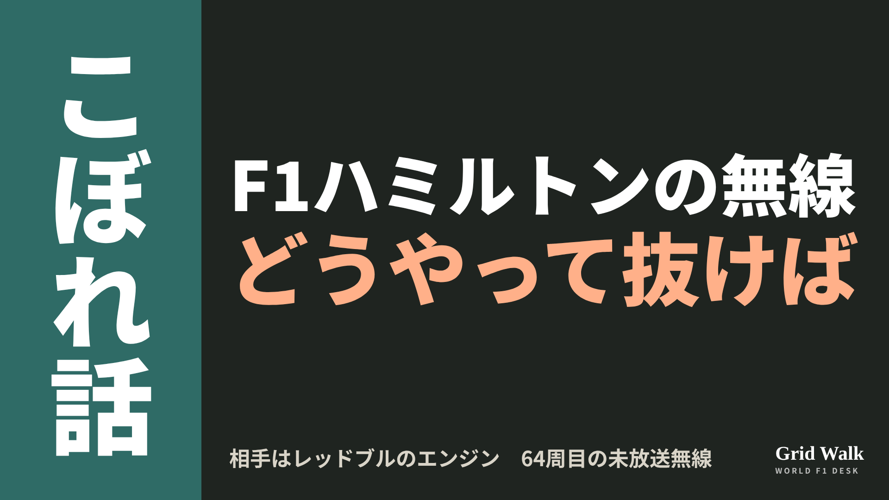<button class="cp dl" data-img="img/x_hamilton-redbull-engine-radio-20261105.png" data-name="x_hamilton-redbull-engine-radio-20261105.png">ダウンロード</button></li>
<li class="st"><div class="hd"><b>① noteをシェアするときの文</b></div><div class="bx" id="p5x0">メキシコシティGPの64周目、ハミルトンの未放送の無線は「レッドブルのエンジンをどうやって抜けばいいんだ」。最後は0.799秒差の2位でした。noteにまとめました #F1jp #ハミルトン</div><button class="cp" data-plain="p5x0">コピー</button></li>
<li class="st"><div class="hd"><b>② ①への返信</b></div><div class="bx" id="p5x1">ほかの海外記事も読みたい方は、F1 Grid Walkへ。
https://f1gridwalk.github.io/lens/hamilton-redbull-engine-radio-20261105/?utm_source=x&amp;utm_campaign=hamilton-redbull-engine-radio-20261105</div><button class="cp" data-plain="p5x1">コピー</button></li>
<li class="st"><div class="hd"><b>③ ②への返信</b></div><div class="bx" id="p5x2">毎日の海外F1ニュースは、日本語でこちらにまとめています。
https://f1gridwalk.github.io/</div><button class="cp" data-plain="p5x2">コピー</button></li>
</ol></section><section class="part" id="p6"><h2><span class="tag">OFF GRID</span>フェルスタッペンが3本線？　レッドブル、来季アディダスかと報道</h2><p class="sub">サイトに公開：04:12</p><ol class="steps">
<li class="st im"><div class="hd"><span class="no">1</span><b>見出し画像</b><em>画像</em></div>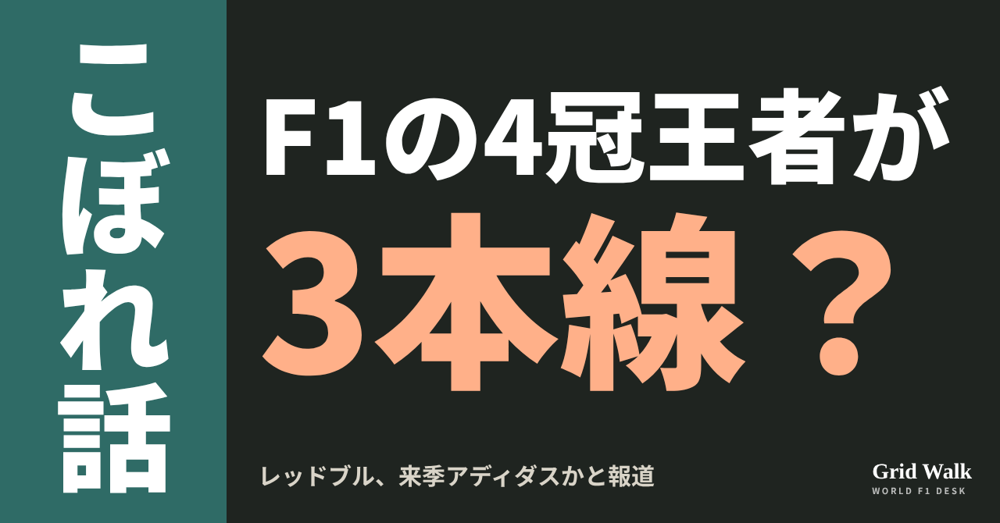<button class="cp dl" data-img="img/verstappen-adidas-20261105.png" data-name="verstappen-adidas-20261105_見出し画像.png">ダウンロード</button></li>
<li class="st"><div class="hd"><span class="no">2</span><b>タイトル</b></div><div class="bx" id="p6t">フェルスタッペンが3本線？　レッドブル、来季アディダスかと報道</div><button class="cp" data-plain="p6t">タイトルをコピー</button></li>
<li class="st"><div class="hd"><span class="no">3</span><b>本文</b></div><div class="bx tall" id="p6r"><p>来季のレッドブルは、3本線のウェアになるのでしょうか。ドイツのF1-Insider.comは11月4日、レッドブルのチームウェアの供給元が、来季はいまのカステレからアディダスに替わる可能性があると報じました。同サイトによると、SNSには、まだ公開されていないとみられる宣伝用の撮影の写真が出回っています。マックス・フェルスタッペンがレッドブルの車の左の前輪に座り、アディダスのロゴと3本線の入ったチームウェアを着ている写真で、車体にもアディダスのロゴが見えるといいます。</p><p>ビルトの3月の報道を伝えた各国の記事と、F1-Insider.comの元の記事へのリンクはサイトで → <a href="https://f1gridwalk.github.io/lens/verstappen-adidas-20261105/?utm_source=note&amp;utm_campaign=verstappen-adidas-20261105">https://f1gridwalk.github.io/lens/verstappen-adidas-20261105/?utm_source=note&amp;utm_campaign=verstappen-adidas-20261105</a></p><p>F1-Insider.comは、写真から見て新しい提携の準備はかなり進んでいるとみています。ただし、レッドブルもアディダスも、切り替えを正式には確認していません。F1-Insider.comの記事の要約は、サイトのニュース https://f1gridwalk.github.io/news/de-f1insider-verstappen-adidas-2027/ にあります。</p><h2>話の始まりは3月のビルト</h2><p>F1-Insider.comによると、この話は3月に独タブロイド紙ビルトが報じたのが始まりです。ビルトは、アディダスが2027年シーズンからレッドブルの公式ウェアパートナーになると報じました。契約は少なくとも3年で、チームには1シーズンあたり約2700万ユーロが入り、期間全体では少なくとも8100万ユーロになると伝えたといいます。オランダのGPblog（3月30日）は、ビルトの報道として、メルセデスとアウディがアディダスから受け取る額も同じくらいだと伝えています。</p><p>イギリスのPlanetF1（4月1日）によると、ビルトは、アディダスが2027年のデザイン案をすでにレッドブルに見せたとも報じました。これまでの濃い青を中心にした見た目から離れ、青を主役にしたまま、鮮やかな色を差した新しい見た目になるといいます。</p><p>アディダスの広報は当時、PlanetF1の取材にこう答えています。</p><blockquote><p>「原則として、うわさや臆測には加わりません」（アディダスの広報、PlanetF1／イギリス）</p></blockquote><h2>契約の長さは媒体でちがう</h2><p>一方、スポーツビジネスの専門誌SportBusinessは、独自の取材で、契約は2031年シーズン末までの5年になるとみていると伝えています。同誌によると、カステレとレッドブルの契約は2030年シーズン末までの7年に延びていましたが、それが途中で終わる形になるといいます。報じられている契約の長さは、ビルトの少なくとも3年と、SportBusinessの5年で、そろっていません。</p><p>いまの供給元のカステレは、2023年シーズンの前にレッドブルと契約しました。PlanetF1によると、2024年のはじめに長期の延長が発表され、当時はF1史上いちばん高額なウェア契約とされました。期間全体で2億ポンドという見積もりもあったといいます。今季2026年も、レッドブルのチームウェアはカステレです。カステレは、アディダスへの切り替えについてコメントを出していません。</p><h2>F1のウェア、入れ替わりの季節</h2><p>F1-Insider.comによると、アディダスは2025年にメルセデスのウェアの供給元になり、今季2026年からはアウディとも組んでいます。イギリスのRacingNews365は、レッドブルが加われば、アディダスは11チームのうち3チームと組むことになると書いています。カステレのほうは、今季マクラーレンが契約を1年早く終えてプーマに移った一方、ハースと新たに組みました（PlanetF1）。</p><p>編集部としては、出回っている写真は話を後押しするものの、まだ正式な発表を待つ段階だと見ています。3月の報道から、7か月あまりがたちました。</p><p><strong>青いレッドブルのウェアに3本線。あなたは似合うと思いますか？</strong></p><p>━━━━━━━━━━</p><p><strong>F1 Grid Walk では、世界のF1ニュースを毎日日本語でまとめています。</strong></p><p>海外の記事の要約を、毎日載せています。</p><p><a href="https://f1gridwalk.github.io/">https://f1gridwalk.github.io/</a></p><p>ほかの海外記事も読みたい方は、F1 Grid Walkへ。</p><p><a href="https://f1gridwalk.github.io/lens/verstappen-adidas-20261105/">https://f1gridwalk.github.io/lens/verstappen-adidas-20261105/</a></p><p>━━━━━━━━━━</p><p><a href="https://f1-insider.com/formel-1-verstappen-ab-2027-deutsche-marke-83562/">出典：F1-Insider.com（ドイツ）</a></p><p><a href="https://www.gpblog.com/en/rumors/red-bull-racing-set-for-multi-million-euro-deal-with-german-giant">出典：GPblog（英語版）（オランダ）</a></p><p><a href="https://www.planetf1.com/news/red-bull-adidas-f1-2027-deal-merchandise">出典：PlanetF1（イギリス）</a></p><p><a href="https://racingnews365.com/red-bull-set-for-eye-watering-multi-million-partnership-deal-report">出典：RacingNews365（イギリス）</a></p><p><a href="https://sponsorship.sportbusiness.com/news/red-bull-racing-marks-adidas-latest-f1-move/">出典：SportBusiness（イギリス）</a></p><p><a href="https://www.planetf1.com/alpine/every-2026-f1-teamwear-ranked-from-pumas-ferrari-launch-to-mclarens-castore-switch">出典：PlanetF1（イギリス）</a></p></div><button class="cp" data-rich="p6r">本文をコピー</button></li>
<li class="st"><div class="hd"><span class="no">4</span><b>ハッシュタグ</b></div><div class="bx" id="p6h">#F1 #F1jp #フェルスタッペン #レッドブル #アディダス #カステレ #サンパウロGP #F1こぼれ話 #OFFGRID</div><button class="cp" data-plain="p6h">タグをコピー</button></li>
</ol><h3 class="xh">X</h3><ol class="steps">
<li class="st im"><div class="hd"><b>X用の画像</b><em>画像</em></div>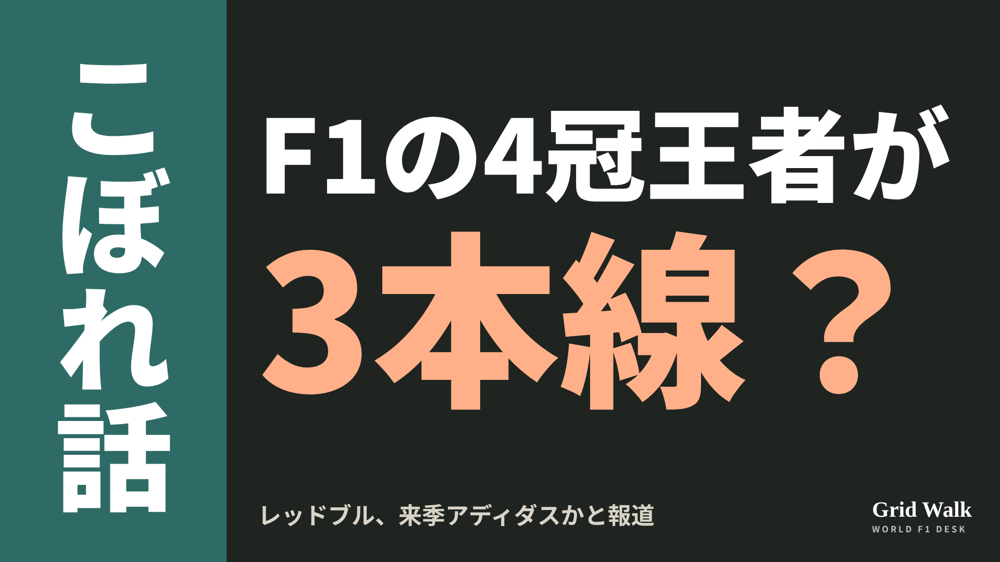<button class="cp dl" data-img="img/x_verstappen-adidas-20261105.png" data-name="x_verstappen-adidas-20261105.png">ダウンロード</button></li>
<li class="st"><div class="hd"><b>① noteをシェアするときの文</b></div><div class="bx" id="p6x0">レッドブルの来季のウェアが、カステレからアディダスに替わるかもしれないとF1-Insider.comが報じました。レッドブルもアディダスも確認していません。noteにまとめました #F1jp #フェルスタッペン</div><button class="cp" data-plain="p6x0">コピー</button></li>
<li class="st"><div class="hd"><b>② ①への返信</b></div><div class="bx" id="p6x1">ほかの海外記事も読みたい方は、F1 Grid Walkへ。
https://f1gridwalk.github.io/lens/verstappen-adidas-20261105/?utm_source=x&amp;utm_campaign=verstappen-adidas-20261105</div><button class="cp" data-plain="p6x1">コピー</button></li>
<li class="st"><div class="hd"><b>③ ②への返信</b></div><div class="bx" id="p6x2">毎日の海外F1ニュースは、日本語でこちらにまとめています。
https://f1gridwalk.github.io/</div><button class="cp" data-plain="p6x2">コピー</button></li>
</ol></section></main><script>
function done(b,msg){const t=b.dataset.t||b.textContent;b.dataset.t=t;b.classList.add('ok');b.textContent=msg||'コピーしました';setTimeout(()=>{b.classList.remove('ok');b.textContent=t},2000)}
function selectEl(el){const r=document.createRange();r.selectNodeContents(el);const s=getSelection();s.removeAllRanges();s.addRange(r)}
async function rich(el,b){
  try{await navigator.clipboard.write([new ClipboardItem({'text/html':new Blob([el.innerHTML],{type:'text/html'}),'text/plain':new Blob([el.innerText],{type:'text/plain'})})]);done(b);return}catch(e){}
  selectEl(el);let ok=false;try{ok=document.execCommand('copy')}catch(e){}
  if(ok){getSelection().removeAllRanges();done(b)}else{done(b,'選択しました。コピーしてください')}}
async function plain(el,b){
  try{await navigator.clipboard.writeText(el.innerText);done(b);return}catch(e){}
  selectEl(el);let ok=false;try{ok=document.execCommand('copy')}catch(e){}
  if(ok){getSelection().removeAllRanges();done(b)}else{done(b,'選択しました。コピーしてください')}}
let dlns=null;(async()=>{try{dlns=await window.claude?.use?.("downloads")}catch(e){dlns=null}})();
async function img(src,b){
  b.dataset.t=b.dataset.t||b.textContent;
  if(!dlns){try{dlns=await window.claude?.use?.("downloads")}catch(e){}}
  if(!dlns){b.textContent='ダウンロードできませんでした';setTimeout(()=>{b.textContent=b.dataset.t},3500);return}
  try{const blob=await fetch(src).then(r=>r.blob());b.textContent='保存の確認を開いています…';
    await dlns.save({filename:b.dataset.name,data:blob});done(b,'ダウンロードしました')}
  catch(e){const c=e&&e.code;b.textContent=c==='declined'?'キャンセルしました':c==='rate_limited'?'少し待ってからもう一度押してください':'ダウンロードできませんでした';setTimeout(()=>{b.textContent=b.dataset.t},3500)}}
document.querySelectorAll('.cp').forEach(b=>b.addEventListener('click',()=>{
  if(b.dataset.rich)rich(document.getElementById(b.dataset.rich),b);
  else if(b.dataset.plain)plain(document.getElementById(b.dataset.plain),b);
  else img(b.dataset.img,b)}));
</script>